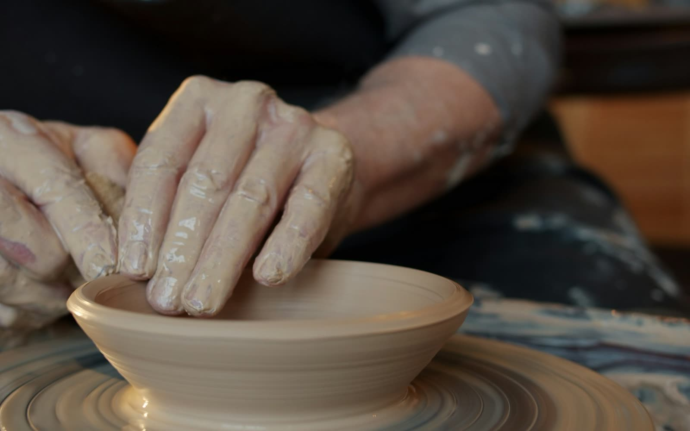
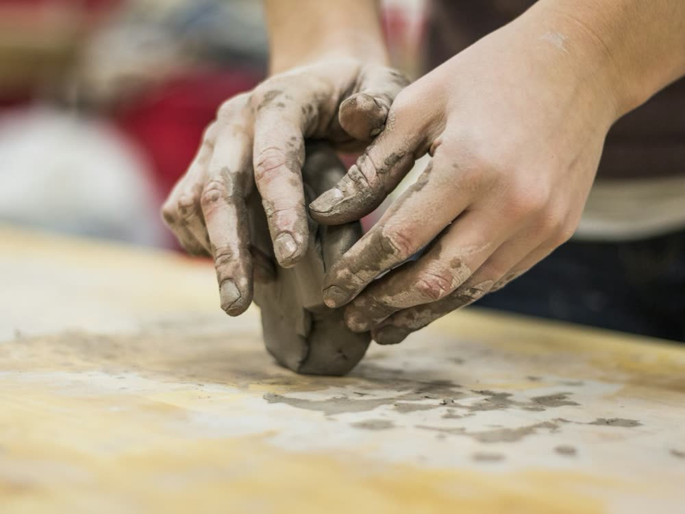
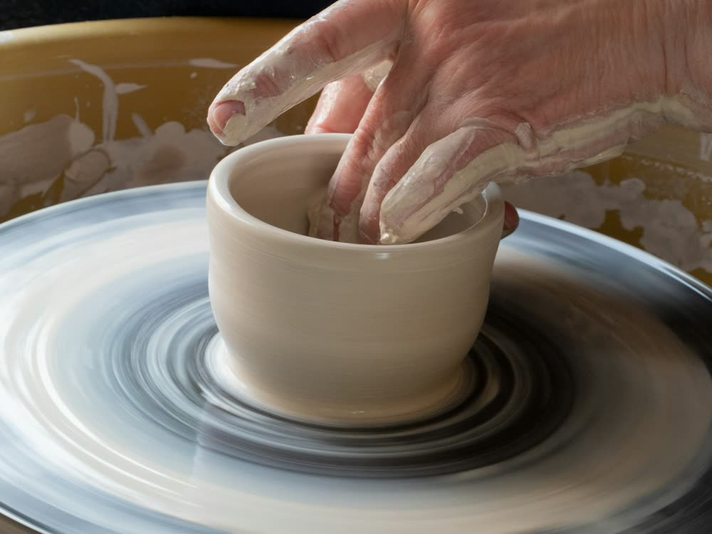
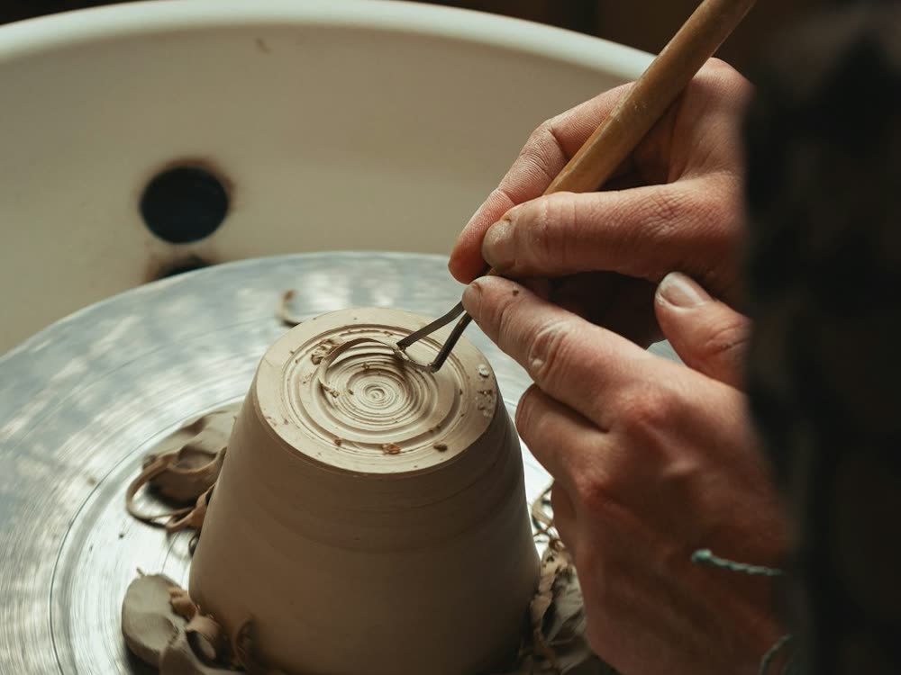
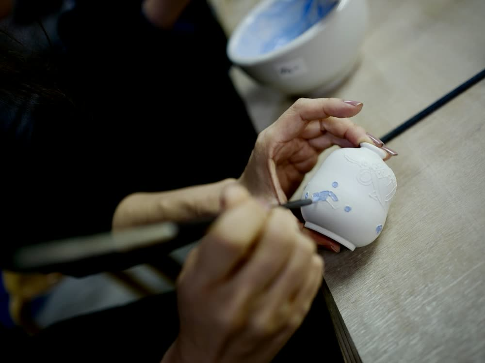
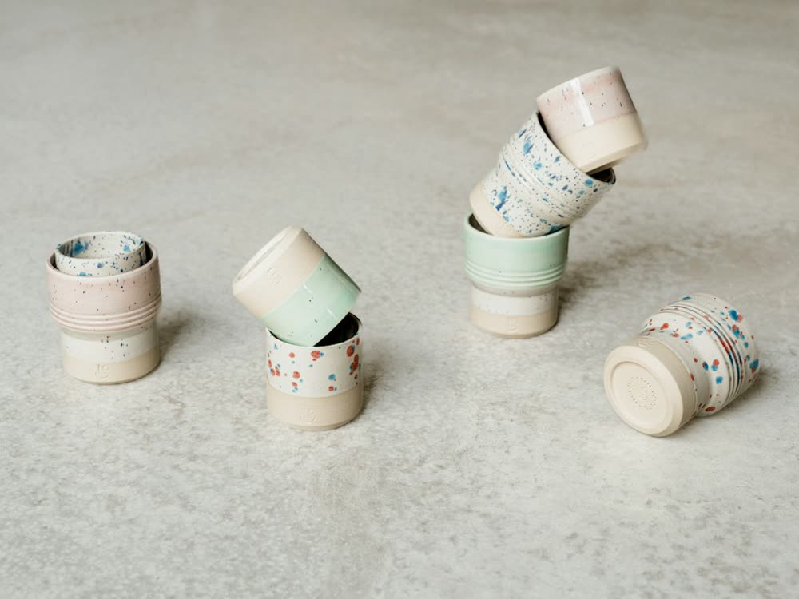
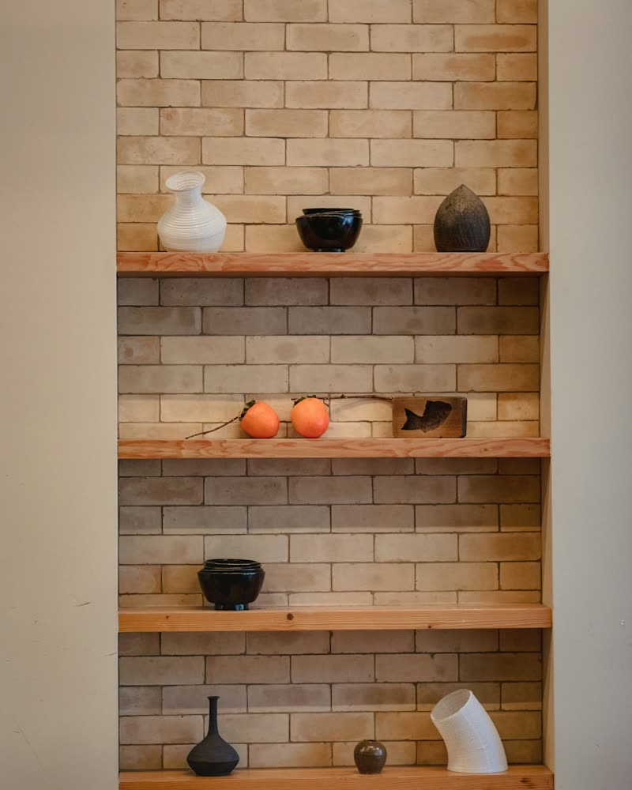

하루 수업 · 처음이어도 괜찮습니다
물레 앞에 앉아 그릇 하나를 만들어 갑니다. 흙을 처음 만져 보는 분을 위한 수업입니다.

수업 순서
1흙 치대기
덩어리 속 공기를 빼며 흙과 먼저 친해집니다.
2물레 올리기
가운데를 잡고 벽을 조금씩 끌어 올립니다. 선생님이 손을 잡아 드립니다.
3굽 깎기
살짝 마른 그릇을 뒤집어 바닥을 깎아 냅니다.
4그림 그리기
붓으로 무늬를 넣습니다. 이름이나 날짜를 적어도 좋습니다.
5구워서 받기
공방에서 유약을 입혀 굽고, 완성되면 알려 드립니다.






공방 안내
만든 그릇은 공방 선반에서 말린 뒤 두 번 굽습니다. 다 되면 찾으러 오시거나 택배로 받으실 수 있습니다.
하루 수업 55,000원 · 흙과 굽는 비용 포함 · 가격은 예시입니다